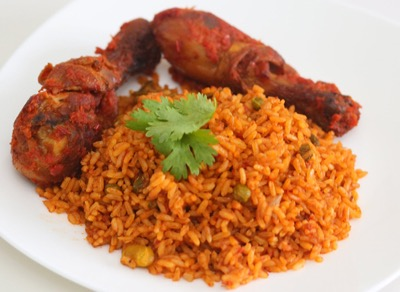
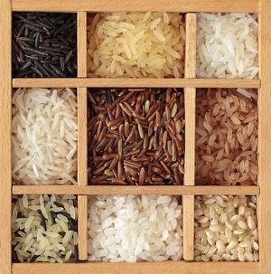

Nigerian Jollof Rice (a.k.a Party Jollof Rice) is the most popular rice recipe in Nigeria.It is also a big party favorite,
just like the Nigerian fried rice. This is one meal that I’ll recommend to anyone who has never tasted a Nigerian dish .
This Party Jollof rice is also easy to make and if you follow the basic recipe and the steps on this page , you can never go wrong .
I also have to admit that it could be very challenging for newbies,
but no worries at all,’cos below this page, you’ll find tips and answers to
some frequently asked questions about the Nigerian Jollof Rice (especially the party style Jollof rice) .
And hope you find it useful.

So here’s the recipe …Enjoy
Ingredients:
2 cups (approx. 500 grams)Precooked long grain rice
5 Tablespoonful tomato paste(very important)
4 whole tomatoes
1 red bell pepper (tatashe)
2 scotch bonnets peppers/atarodo
100ml vegetable oil
A small onion (sliced)
1 tablespoonful ground crayfish(optional)
½ teaspoon each of Thyme and curry
2 small Bay leaves (optional)
1 teaspoon salt to taste
1 stock cube
Water, as needed(details in recipe below)
Before you cook Jollof Rice
Prepare the tomato stew. Visit the Tomato Stew page for details on how to do that.
It is advisable to prepare tomato stew before hand and keep in the freezer.
This is so that whenever you want to cook any jollof rice related dish,
it is just a matter of adding it to your cooking.
If you will use whole chicken then wash and cut it into pieces.
Cook with the thyme, Knorr cubes and 2 bulbs of onions (chopped).
The cooking time depends on the type of chicken.
The rooster or cockerel cooks much faster than the hen but the hen is definitely tastier.
When done, grill it in an oven. You may also fry it. This is to give it a golden
look which is more presentable especially if you have guests for dinner.
Parboil the rice using the method detailed in parboiling rice for cooking jollof rice.
Rinse the parboiled rice and put in a sieve to drain.
Cooking Directions
Pour the chicken stock and the tomato stew into a sizeable pot and leave to boil.
Add the drained parboiled rice, curry powder, salt and pepper to taste.
The water level should be the same level of the rice.
This is to ensure that all the water dries up by the time the rice is cooked.
Cover the pot and leave to cook on low to medium heat.
This way the rice does not burn before the water dries up.
If you parboiled the rice as described at parboiling rice for cooking jollof rice,
the rice should be done by the time the water is dry. Taste to confirm.
If not, you will need to add more water and reduce the heat to prevent burning.
Keep cooking till done.
You can spice up this recipe by adding 2 well known vegetables to arrive at what
we refer to as Mixed Vegetables Jollof Rice.
If you have any questions about cooking the best Nigerian Jollof Rice, click here to ask me.
Varieties of rice
Rice which is the primary content is composed of various varieties and nutrients in a 100 grams of short-grain, cooked white rice.

The varieties of rice are typically classified as long-, medium-, and short-grained.
The grains of long-grain rice (high in amylose) tend to remain intact after cooking; medium-grain rice (high in amylopectin)
becomes more sticky. Medium-grain rice is used for sweet dishes, for risotto in Italy, and arros negre in Spain.
Medium-grain rice is used extensively in Japan, including to accompany savoury dishes,
where it is usually served plain in a separate dish. Short-grain rice is often used for rice pudding.
Instant rice differs from parboiled rice in that it is fully cooked and then dried,
though there is a significant degradation in taste and texture.
There are different types of rice such as White, Brown, Red and Black.
Nutrition
Cooked, unenriched, white, long-grained rice is composed of 68% water, 28% carbohydrates,
3% protein and negligible fat (table). In a 100 gram serving, it provides 130 calories and contains
no micronutrients in significant amounts, with all less than 10% of the Daily Value (DV) (table).
Cooked, white, short-grained rice also provides 130 calories and contains moderate amounts of B vitamins,
Iron, and manganese (10–17% DV) per 100-amount (table). A detailed analysis of nutrient content
of rice suggests that the nutrition value of rice varies based on a number of factors. It depends
on the strain of rice, that is between White, Brown, Red, and Black (or purple) varieties of rice
– each prevalent in different parts of the world. It also depends on the nutrient quality of the
soil rice is grown in, whether and how the rice is polished or processed, the manner it is enriched,
and how it is prepared before consumption. Rice is the staple food of over half the world’s population.
It is the predominant dietary energy source for 17 countries in Asia and the Pacific, 9 countries in North
and South America and 8 countries in Africa. Rice provides 20% of the world’s dietary energy supply, while
wheat supplies 19% and maize (corn) 5%.